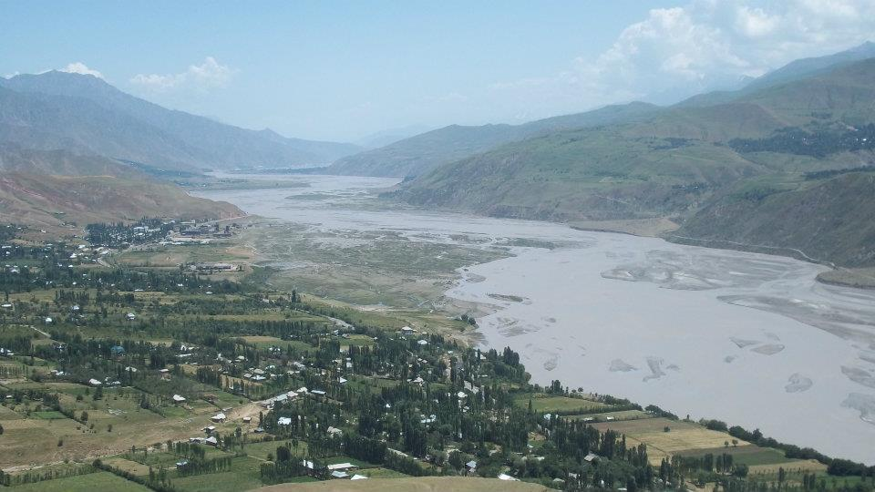

Hello! I'm a political science PhD turned data scientist.
This website is less a personal site and more a place for me to house my experiments in front-end coding and data visualization (as well as to showcase my nerdy obsessions with hiking, running, and attempting to make my own backpacking gear).
I'd planned to have a bit more here before I launched, but in the interest of not letting the perfect be the enemy of the good, I decided to go ahead and throw up some very rough experiments.
D3.js assignments from the Knight Center's Infographics and Data Visualization with D3: